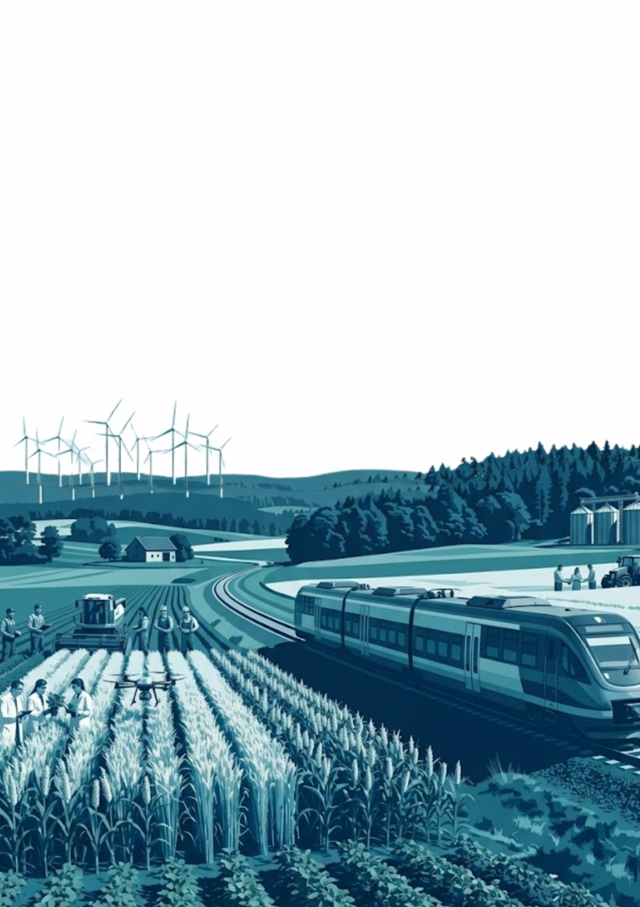
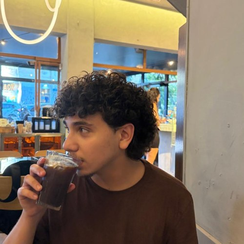
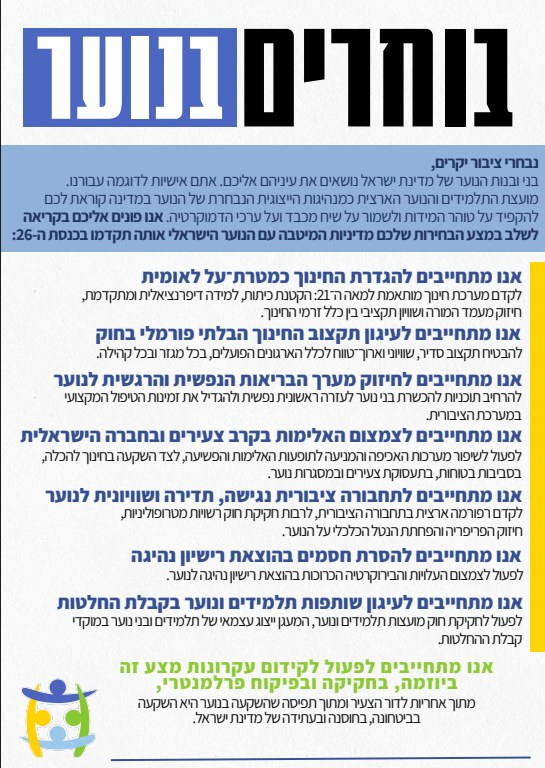
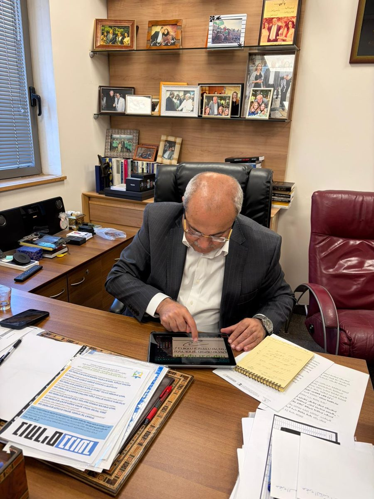
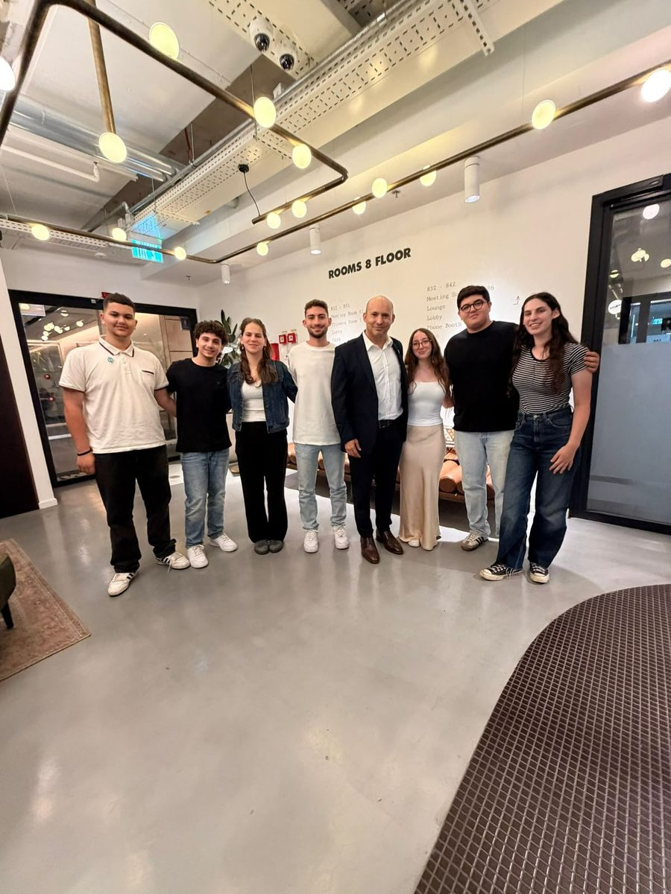
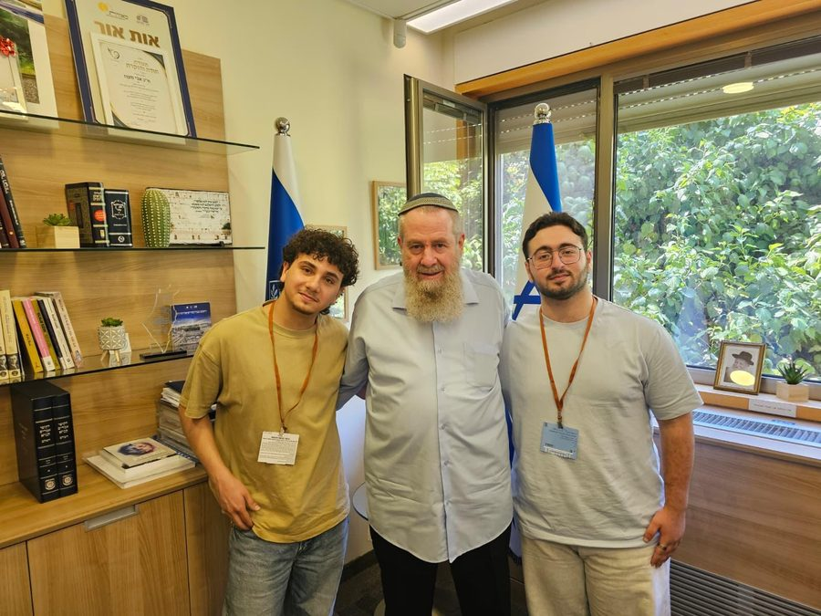

המצע הזה הוא לא רשימה של פרקים, אלא מסע אחד שלם: מהשטח, דרך חיזוק הארגון, ועד לשולחן קבלת ההחלטות ולחברה צודקת יותר.
מועצות בית ספריות, רשויות, מחוזות ונציגים.
שפה ארגונית, הכשרה, מיפוי וליווי.
כנסת, משרדי ממשלה, משרד החינוך ורשויות.
חברה אזרחית, אקדמיה, תנועות, ארגונים ומגזר עסקי.
ביטחון, שוויון הזדמנויות, זכויות נוער וקול לנוער.

אני רותם גטריידה, אני נער בן 17 מפתח תקווה. התחלתי את מועצות התלמידים והנוער בכיתה ז׳ כשהניצוץ שלי נבע בין היתר מהיותי ילד עם לקויות למידה שלא מצליח להסתדר עם מערכת החינוך, ושאוהב להאמין ביכולת שלו לשנות את החברה.
למדתי עם השנים שלי המון, על עצמי, על המערכת, על המשפחה שלי ועל מה שאני מתעסק בו היום.
אני מאוד אוהב ומאמין במועצות, וזו הסיבה מספר 1 שלי לרוץ לתפקיד הזה.
התחלתי את הדרך שלי במועצות התלמידים והנוער לפני חמש שנים, מתוך אמונה אמיתית שהנוער יכול לחולל שינוי בחברה הישראלית, במערכת החינוך ובעיצוב המקום שבו נחיה.
אני כותב את המצע הזה היום כיו״ר הוועדה האתית-משפטית הארצית, לאחר שהובלתי מועצה בית ספרית, רשותית ומחוזית. הדרך שלי במועצות היא גם הדרך שבה אני מאמין שהארגון צריך לצמוח: מהשטח, דרך המחוזות, ועד לשולחן ההחלטות.
בשנים האחרונות פגשתי את השטח מקרוב - הכרתי את הבעיות הספציפיות של בתי ספר הרחוקים ממני אף כמה קילומטרים בודדים, התמקצעתי בכל מה שהגיע לפתחי, והתמודדתי עם סוגיות אמיתיות שפוגשות את הארגון שלנו יום-יום, מפיהם של נציגים, יו״רים, גורמי פיקוח ושותפים - הכרתי את מועצות התלמידים והנוער מהשטח, ברגליים.
בשנים האלה עברתי דרך ארוכה במועצות התלמידים והנוער, שלימדה אותי להוביל מחוז, לקחת חלק משמעותי בהובלת הארגון כולו, ולהתמודד עם בעיות מורכבות תוך שאני רואה את הארגון שלנו חי ונושם.
בשנים של חוסר יציבות הרגשתי, כנער, גאווה במה שאנחנו עושים. וכנציג הבנתי שיש עוד אינספור דרכים שנוכל להגיע אליהן.
אני מאמין שתפקידים הם פלטפורמה למימוש יעדים ואידאולוגיה. לפני שהתחלתי לשקול את הבעד והנגד לגבי הריצה, ישבתי וחשבתי שוב על מה הדליק את הניצוץ, אי-שם בכיתה ז׳, להיכנס למועצות התלמידים והנוער.
וידעתי מהר מאוד לענות לעצמי שמה שהביא אותי למועצות הוא היכולת של המקום הזה לחולל שינוי בחברה, עבור חברה צודקת. ומהי חברה צודקת?
מאותו רגע ידעתי שליבת המצע הזה תהיה השאיפה שלנו, כנוער, להוביל בחברה הישראלית - עבור חברה צודקת.
ואיך מגיעים לנוער שמוביל חברה צודקת? שותפות - בבית הספר, ברשות המקומית, במשרדי הממשלה, במחוזות, בארגוני החברה האזרחית ובבית הנבחרים - כשבכל מקום נוער יושב סביב השולחן.
וברור לי שנוער ישב סביב השולחן כתוצאה ממעורבות שהנוער לוקח על עצמו בחברה, דרך ארגון מועצות תלמידים ונוער שהוא משפיע, מקצועי, מחובר וחזק - הודות לשפה ארגונית מוטמעת.
אני מאמין ביכולת של מועצת התלמידים והנוער הארצית, ושל כל מועצה במדינה, להיות זו שיושבת סביב שולחן קבלת ההחלטות, ושזהו המתכון הטוב ביותר לחברה צודקת.
מקווה שתאמינו במצע הזה כמוני.
סגן יו״ר בית ספרי · נציג עירוני
סגן יו״ר בית ספרי · יו״ר אתית עירוני · נציג מחוזי
סגן יו״ר בית ספרי (קדנציה שנייה + ממלא מקום יו״ר אתית) · יו״ר אתית עירוני (קדנציה שנייה) · ראש צוות זכויות
יו״ר אתית בית ספרי (קדנציה שנייה) · סגן יו״ר עירוני · יו״ר אתית מחוזי
יו״ר אתית בית ספרי · נציג עירוני · יו״ר מחוז · נציג ארצי וסגן יו״ר הוועדה האתית-משפטית
יו״ר הוועדה האתית-משפטית הארצית
כל גלגל מסתובב - הארגון כולו מתקדם
מועצות לא מתחזקות בסיסמאות - הן צומחות דרך שפה, הכשרה, ליווי ועבודה יומיומית.
אנו רואים ברחבי המדינה מועצות רשותיות שחלקן כמעט פסיביות, ללא קשר עם בתי הספר, עם יכולת השפעה קטנה מדי ברשות וחוסר הבנה של מהות המועצה. באופן דומה, אנו רואים בבתי הספר מועצות בית ספריות המנותקות לחלוטין מהארגון, בחירות שאינן מתבצעות לפי שפה ארגונית, ומנחים בית ספריים השרויים בחוסר הבנה. וכן מחוזות ויו״רי מחוזות שצריך להעניק להם כוח רב יותר לפעולה.
גלגלי המועצות דרשו מאיתנו בשנים האחרונות עבודת עומק משמעותית לחיזוק הארגון - שכן השנים האחרונות, שכללו את הקורונה, את פיצול משרד החינוך לשני משרדים, ושינויים במערכי הפיקוח של מינהל חברה ונוער, החלישו את המועצות הבית ספריות והביאו אותנו למצב המחייב תוכניות פעולה.
כיו״ר הוועדה האתית-משפטית הארצית בשנה האחרונה שמתי דגש משמעותי על מועצות התלמידים והנוער כארגון. הטמעת השפה הארגונית היא קריאת השכמה למועצות לקום ולפעול, הדרך עוד ארוכה, והמנגנון שפותח חייב לצאת לשטח עד שנת הלימודים תשפ״ח - זו תהיה אחת ממטרות העל שלי.
הראייה שלנו היא להסתכל לעומק על הרשויות ובתי הספר, יחד עם המחוזות ויו״רי המחוזות - ההסתכלות שלי על יו״ר מועצה מחוזית היא כעל מנוע ניהולי מחוזי של מערכת מועצות התלמידים והנוער, כל אחד בתחום מחוזו, בהתאם לצרכים ולמדיניות הארצית והמחוזית כאחד. ההבנה שבה אנו מטמיעים שפה ארגונית, פותרים בעיות בצורה שוטפת, ומחברים את המועצה הארצית והמחוזות למערכת אחת שפועלת בשפה משותפת - קריטית להצלחת חיזוק גלגלי המועצות.
המועצות זקוקות למסע של חיזוק, בנייה וצמיחה, המבוסס על הטמעת השפה הארגונית, תהליכי הכשרה, בניית תהליכים מחוזיים בהתאם לסעיפים 6-7 במסמך הוועידה הארצי, וכן חקיקת חוק מועצות תלמידים ונוער שיאפשר למועצות התלמידים והנוער עצמאות בחוק, ויחזק את מעמד המועצות המחוזיות מבחינת הכלים והכוח שברשותן, דרך מנגנוני הטמעת השפה הארגונית.
המועצות הרשותיות שלנו צריכות לקבל תמיכה משמעותית מהמחוזות, כדי שיוכלו לטפח גם את חוזק הנציגות בתוך הרשות וגם את המועצות הבית ספריות בתחום הרשות.
בתפקידי כיו״ר מחוז תל אביב, התחדדה בי ההבנה לאחר שיח עם מפקחות, בתי ספר ורשויות וביקורים ברשויות, ולאחר שנפגשתי עם נציגים ונאבקתי על גיוון אוכלוסייה ועל ייצוג נכון ומוסדר - אני יודע ומאמין שאנחנו יכולים להקפיץ את הארגון כמה רמות מעלה, ולהתגבר על המכשולים העומדים בפנינו בהכשרת הנציגים ובליקויי התקינות בבתי הספר והרשויות.
התהליך להטמעת השפה הארגונית בנוי כפי שמוצג בתרשים המצורף כאן. התהליך הובא בשנה האחרונה בפני סמנכ״ל משרד החינוך ומנהל המינהל, הוכרז בוועידה, והרקע לו נבנה בימים אלה במיפוי המועצות על ידי המפקחת הארצית.
התהליך להטמעה ופיקוח על השפה הארגונית הוא מנגנון שיאפשר לנו לנהל את מועצות התלמידים טוב יותר, לתת מענה לבעיות, ולפתח תמיכה וליווי מסודרים.
נשאף להביא בהקדם את התהליך אל מנהלי המחוזות, לקבלת תמיכה והתחלת ההטמעה בליווי הפיקוח וההדרכה של מינהל חברה ונוער.
נמשיך בתהליכי המיפוי השוטפים.
לוח הזמנים המלא של התהליך, משלב ההסברה ועד ההוקרה בסיום השנה, לפי שלושת שלבי היישום.
מורחבת יו״רים + רפרנטים
חשיפה להנהלת מטה מורחבת
חשיפה למנהלי מחוזות
חוזר מפורט למינהל חברה ונוער במחוזות על הפעלת התוכנית בשנת תשפ״ז
לפני שנת הלימודים תשפ״ז
פרסום לוח גאנט מחוזי כולל (מומלץ בכנס מחוזי)
כנס/ישיבת התנעה עם מנחים רשותיים ובתי ספר, כשולחן עגול לפי מחוזות
התנעת מערך ההכשרה המחוזי (הצגת סילבוס חובה ובחירה)
ליווי והדרכה בארגון, מהמועצות המחוזיות אל הרשויות ובתי הספר* יש לייצר ליווי למלווים מצד המזכירות המחוזית
סיום הכנת הכיתות לבחירות למועצה הבית ספרית
סיום בחירות למועצה הבית ספרית
סיום בחירות לבעלי תפקידים ונציגים למועצה הרשותית (בי״ס + ארגונים)
סיום הקמת המועצות הרשותיות
סיום בחירות לנציגות מחוזית
סמינרי חנוכה + פורום יו״רים וסגני יו״רים מחוזי וארצי
היערכות לדוחות ביקורת
ישיבות סטטוס עם רכזי החח״ק הבית ספריים
ישיבות סטטוס עם מנהלי מחלקות הנוער של המועצות הרשותיות
ועדה מחוזית להצגת פעילות והטמעת השפה - מורכבת ממפקח רשותי, רפרנט מנהיגות, מועצה מחוזית ובוגר/ת
הוועדה תגיע אל הרשויות, ושם תוצג פעילות המועצה והעבודה לפי השפה הארגונית
יישום תוצאות הוועדה במידת הצורך
הוקרה והערכה ברמת הרשות או המחוז
המחוזות שלנו הם ליבת חוזקו של הארגון. מחוזות חזקים מייצרים ארגון מנוהל היטב.
בכל החלטה עלינו להכיר בגלגל המחוזי כמנוע ניהולי מחוזי של מערכת מועצות התלמידים, כשכל מחוז אחראי על הרשויות ובתי הספר שבתחומו. המחוזות הם מנוע הצמיחה של הארגון כולו.
עבור המחוזות נבנה, יחד עם יו״רי המחוזות והמזכירות הארצית, את תוכנית שלושת הח׳ים:
חיזוק הקשר של המחוזות עם מינהל חברה ונוער ומשרדי הממשלה ברמה המחוזית.
חיזוק מערך ההכשרה והשפה הארגונית במחוז.
חיזוק המיפוי המחוזי במטרה לתת כלים ופתרונות לאתגרים מקומיים, כדרך ליישום מסמך הוועידה.
בקדנציה הקרובה נוביל, הן עבור המחוזות והן עבור כלל הגלגלים, את הוצאתו לפעולה מלאה של התהליך להטמעה ופיקוח על השפה הארגונית.
במורחבת יו״רי המחוזות - נמפה את שלוש הנקודות שכל יו״ר מחוז היה רוצה לקדם.
נבנה תוכנית ייעודית לליווי, הכשרה והענקת כלים נוספים ליו״רי המחוזות הנכנסים, במטרה ליצור שפה משותפת בין הארצית והמחוזות, ובפרט סביב תפקיד הגלגל המחוזי.
נוביל את התהליך להטמעה ופיקוח על השפה הארגונית כתהליך-על, ונבנה את תוכנית שלושת הח׳ים בהתאמה לכל מחוז, דרך הצבת יעדים לכל מחוז ועבודה משותפת עם כל יו״ר מחוז לפי צרכיו הספציפיים.
נבצע מעקב קבוע אחר הגאנט הארצי, במטרה לסייע למחוזות לעמוד בו ולזהות קשיים בזמן אמת, כך שהגלגלים יוכלו להמשיך לנוע.
צוות אחד, בתנועה מתמדת
סגן יו״ר המועצה - אשאף לקשר עבודה שוטף וצמוד עם סגן יו״ר המועצה. נקבע בתחילת הקדנציה את דרכי העבודה לפרטים, ברמת ניהול תחומים ותיאום ציפיות בכל אחד מהם.
מזכ״ל המועצה - יהווה חלק משמעותי בניהול הלוגיסטי של המועצה ושל המזכירות - נשאף להעמיק, יחד עם מזכ״ל המועצה, את שימור הידע של מועצות התלמידים בארכיון אחד.
דובר המועצה - אשאף, יחד עם דובר המועצה, לתכנן את המשך האסטרטגיה התקשורתית לקראת הבחירות לכנסת, ולבנות מהלכים ופעולות לחיזוק מערך הדוברות בכל גלגלי המועצות.
יו״ר הוועדה האתית-משפטית - אשאף, יחד עם יו״ר הוועדה האתית-משפטית, להציב את התהליך להטמעה ופיקוח על השפה הארגונית כמטרת-על לקדנציה, ובנוסף נבנה בהקדם האפשרי לוח גאנט לפתיחת תקנון-העל לשנה הקרובה.
יו"ר ועדת נוער וקהילה - נשאף לחדד את הפרויקט הארצי הנבחר ולהוציאו ליישום בהקדם, בנוסף לתכנון המהלכים הבאים בחברה הישראלית בנושא הפשיעה והאלימות.
מבקר המועצה - אשמור על קשר רציף עם מבקר המועצה - עבורי, תהליכי הביקורת הם ייעוץ מדויק ומשקף לניהול נכון של ארגון, מועצה, כלים ופעולות.
ההגדרה של מליאת המועצה כגוף העליון היא הנכונה ביותר לצורך קביעת מדיניות המועצה - ובאופן ספציפי במליאה הארצית, לכלל ההחלטות המועברות מהמועצה הארצית אל גלגלי המועצות. כל נציג ונציגה במליאה צריכים לצאת מהקדנציה עם תחום שהובילו, אחריות שלקחו וצמיחה שעברו.
כמו בכל שנה, נמפה בתחילת השנה את המליאה הארצית לפי תחומים, חוזקות וניסיון עבר במועצות, על פי כל נציג.
השאיפה שכל נציג יוביל נושא נראית לי נכונה, ומתפרשת לאורך זמן על פני קדנציה שלמה - למימוש אישי של הנציג, ולהכוונת המזכירות, בין אם ברמת הפורום המוביל או יו״רי הוועדות, בהתאם לנושא, ליוזמה, לפעולה או למהלך.
נבחן את מבנה השדולות - במבט על השנה האחרונה, יש היגיון לעבור למתווה אחר שייצג את האוכלוסיות וייתן להן מענה - אחת האפשרויות היא נציג המתמחה בנושא, ומכלל את ייצוג האוכלוסייה במועצה הארצית.
להצמיח כוח נוער בזירה שבה מתקבלות ההחלטות
אנחנו מתקרבים היום בצעדי ענק לבחירות לכנסת ה-26. לקראת הבחירות השקנו את ״מצע לנוער״ - תהליך שלם שיציב את קול הנוער בלב מערכת הבחירות הקרובה.




בעיניי הכנסת היא זירה שלא מוצתה מספיק בשנים האחרונות, והחלפת הכנסת הנוכחית תאפשר לנו לבסס את מעמד המועצה הארצית בכנסת ולהשתמש בכלים שהיא מעמידה לרשותנו.
בעזרת מערכת הבחירות, מצע לנוער וכלל התהליך לקראת הבחירות לכנסת ה-26, נהפוך את הכנסת לזירה מרכזית עבורנו, נחזק את הלובי של נציגי הנוער בכנסת מול הממשלה שתיבחר ומול כל סיעה ומפלגה. נעשה זאת באמצעות מספר כלים:
קידום ״מצע לנוער״ - התהליך יהיה בשיאו בקדנציה הקרובה; נקיים את פאנל הנוער הגדול כדי לייצר הד נוסף סביב המצע ומסרי המפלגות, נמשיך בקידום האסטרטגיה של המועצה הארצית, ונדבר בחודשים הקרובים - עד השבעת ממשלה חדשה - על התחייבויות הפוליטיקאים כלפי הנוער.
מיפוי רחב של חברי הכנסת ויצירת שיתופי פעולה - חברי כנסת חדשים הם הזדמנות ליצור שיתופי פעולה. נקדם מיפוי של כלל חברי הכנסת והסיעות, ונפעל לקיים קשרים עם קואליציה ואופוזיציה כאחד. נקיים פגישות שותפות כדי לחזק את ההיכרות והשותפות איתנו.
שותפות אפקטיבית בוועדות הכנסת - נפעל להגביר את נוכחותנו בוועדות הכנסת, להרחיב את שיתוף הפעולה עם ערוץ הכנסת, ולחזק את תהליכי ההכנה לקראת הישיבות ואת הפקת הלקחים וסיכום כל פגישה - לשם רצף זיכרון ארגוני וקידום נושאים. הכלים הפרלמנטריים והפיקוח הפרלמנטרי הם כלי חיוני לעשייה שלנו מול משרדי הממשלה.
קידום ועדת הנוער - ועדה בכנסת העוסקת בענייני הנוער תהיה הזדמנות אפקטיבית ליצירת שיתופי פעולה בין חברי הכנסת המובילים את דגלי הנוער והחינוך, ולהעלאת נושאים חשובים לסדר היום, כך שנייצר אפקטיביות רבה יותר בפעילות הפרלמנטרית של הנוער.
קידום חקיקה רלוונטית לנוער - נפעל לקדם חקיקה ראשית הרלוונטית לנוער, כגון חוק החרם, חוק החינוך המעצים, חוק המועצות וחוק ה-Take It Down, ובמקביל להשפיע על חקיקת חוקים מזווית הראייה של הנוער, בהשראת מודלים עולמיים. ברגע שהפוליטיקאים המרכיבים את הממשלה וקובעים מדיניות במשרדים השונים יראו את טובת הנוער ואת הנוער כשותף בקבלת ההחלטות, נוכל להקפיץ משמעותית את העשייה ואת יכולת ההשפעה של המועצה הארצית.
בקדנציה הקרובה נשאף לחוקק את חוק החינוך המעצים, ולהשפיע על משרדי הממשלה מבפנים ודרך הכנסת.
משרדי הממשלה, כקובעי מדיניות ברמה המקצועית, חיוניים להובלת הנוער בחברה הישראלית ולקידום האינטרסים של כל נער ונערה. הקשר של מועצת התלמידים והנוער הארצית עם משרדי הממשלה פורח בשנים האחרונות, ועדיין יש לאן לשאוף.
מטרה - קבלת החלטת מנכ״לים משותפת של שלושה מנכ״לים במשרדי הממשלה, לשילוב מועצות תלמידים ונוער בכל הרמות הרלוונטיות במשרד.
נתחבר עם המשרד לביטחון לאומי כחלק מהמאבק בפשיעה ובאלימות.
נתחבר עם המשרד לשוויון חברתי, בהתמקדות על היחידה לקידום אוכלוסיית הלהט"ב והרשות לפיתוח כלכלי של מגזר המיעוטים, במטרה לחזק את החברה הערבית והקהילה הגאה.
נעמיק את הקשר עם משרד התחבורה והביטחון בדרכים, ובאופן ספציפי עם הרשות הארצית לתחבורה ציבורית.
נשאף להטמיע במועצות התלמידים והנוער את הקשר והעבודה מול הרשויות המטרופוליניות, שעברו בחוק ממש בחודש האחרון.
הקשר עם הרשות הארצית לתחבורה ציבורית יאפשר להעלות בעיות רחבות בתחבורה הציבורית, ולחבר בין הרשויות המקומיות במטרה ליצור תחבורה ציבורית נוחה ושוויונית.
ניצור קשר עם חברות האוטובוסים ורכבת ישראל, ונשאף לתת מענה לבעיות רחבות.
לפנינו שנה שתחייב אותנו לרקום את הקשרים מחדש - לנוכח חילופי מנכ״ל, ואולי גם שר חינוך. אנו רוצים להמשיך ולהעמיק את קשרינו, ואת היכולת הנהדרת שהייתה לנו בשנים האחרונות ליטול חלק בקביעת המדיניות במערכת.
נשאף להטמיע בבתי הספר מקום לנוער בחינוך הפורמלי, דרך בחינת מודלים כגון ״נוער בוחר ערך״, כדרך לשילוב מועצות התלמידים בגפ״ן כחובה.
נמשיך את הקשר עם המזכירות הפדגוגית, ונשאף להחזיר את כנס ״קול החינוך״ של המועצה הארצית והמפמ״רים, בשולחנות עגולים לפי מקצועות.
נביא להשלמת התהליך שהחל השנה עם חוזרי המנכ״ל - זה יאפשר לנו לבחון וליטול חלק במדיניות בנושא הטלפונים בחטיבות, בדיווח ההיעדרויות ובמדיניות הפדגוגית הכללית.
החיבור הבא שלנו יהיה אגף בכיר תכנון ואסטרטגיה - אגף קריטי לנראות מערכת החינוך, המודד את המערכת ובוחן עמידה ביעדים ארוכי טווח.
צומחים גם מעבר לגבולות המערכת
האקדמיה, התנועות והארגונים
כדי להרחיב השפעה, צריך לצמוח גם מחוץ למערכת: עם אקדמיה, ארגונים, תנועות ושותפים. יש צורך ממשי שנעמיק את קשרינו בחברה האזרחית - בעלת כוח ויכולת השפעה על סדר היום במדינה.
נשאף להוביל חלק לא קטן מהמהלכים השנה גם דרך החברה האזרחית, ובאופן ספציפי דרך ארגונים וקרנות - זאת לנוכח המצב שבו, בממשלת מעבר, אין תקציב מדינה ויכולות משרדי הממשלה מוגבלות.
החברה האזרחית, מבחינתי, בנויה מכמה תחומים שאליהם נתחבר ונעמיק את קשרינו:
אוניברסיטאות, מכללות וההון האנושי של האקדמיה.
נעמיק את הקשר לגבי הארגונים הרלוונטיים, כגון אגודות הסטודנטים והשלטון האזורי.
חברות וקרנות פילנתרופיות.
לבלום את הגל בתנועה, ולהצמיח ביטחון אמיתי
אין צמיחה בלי ביטחון. אין מנהיגות נוער בלי אחריות לחיים עצמם.
החברה הישראלית נמצאת היום במצב חירום. אירועי האלימות והפשיעה שאנו רואים במדינה, ובחברה הערבית בפרט, בתדירות יומיומית - לא יכולים להימשך, ומועצות התלמידים והנוער אינן יכולות לעמוד מנגד.
חובתנו לייצר לכל בן ובת נוער קורת גג וביטחון, המבוססים על רצף חינוכי בין החינוך הפורמלי לבלתי פורמלי, על מתן כלים למערכת החינוך, על מענה רגשי, ועל מניעה ומתן עזרה.
חבילת חוקים: חוק החרם, חוק ה-Take It Down, ובעדיפות בהולה - חוק חינוך מעצים, שייצר רצף חינוכי בין החינוך הפורמלי לבלתי פורמלי.
משרדי ממשלה: מעבר למדיניות ברורה ומדויקת יותר עבור השטח, בדרכי המניעה הראשונית.
נקדם מהלך דרך הפוליטיקאים להגדלת מספר הפסיכולוגים בבתי הספר, והוספת תקנים למדריכי מוגנות.
דרישה לחיזוק הרשות לביטחון קהילתי.
שותפות אמיתית, קול אחד, ביטחון לכל נער ונערה
עבודה משותפת עם נציגי החברה הערבית לפתרון הבעיות והמצוקות של הנוער הערבי במדינה
ייצוג חזק וברור של צרכי הנוער הערבי
מניעה, חוסן קהילתי, וקורת גג לכל נער ונערה
נתחבר עם הרשות לקידום מגזר המיעוטים במשרד לשוויון חברתי, במטרה להביא את קול הנוער בתוכניות לחיזוק הביטחון התעסוקתי והכלכלי גם בקרב הנוער בחברה הערבית.
אנחנו עומדים מול מדינה שבשנים האחרונות מסרבת לטפל בבעיית הפשיעה והאלימות בחברה הערבית.
אנחנו עומדים היום בפניי מציאות בלתי הגיונית - עד היום (6/7/2026) נרצחו בחברה הערבית 152 בני אדם בשנה, בניהם בני נוער שאנו מייצגים.
אין מנוס מלדרוש מהמדינה להגביר בחברה הערבית תוכניות מניעה, לחזק תנועות וארגוני נוער, להפעיל תוכניות חוסן וחיסון קהילתי, ולספק לכל נערה ערבייה ולכל נער ערבי קורת גג שתגן עליהם.
אם יידרש - נשקול, בחודש אוגוסט, בפורום המזכירות המורחבת ויחד עם נציגי החברה הערבית, להביא בפני מליאת המועצה תוכנית פעולה כוללת להפעלת לחץ על המדינה לספק פתרונות לחברה הערבית - כל הדרכים הלגיטימיות יישקלו.
אם אין סיבה שתלמיד ילך לבית הספר כשהוא נתון תחת מתקפת טילים, אין גם שום סיבה שילך לבית הספר כשהוא חי בין יריות, דקירות ואלימות.
إحنا واقفين قدّام دولة، بآخر سنين، رافضة تعالج مشكلة الجريمة والعنف بالمجتمع العربي.
بس خلال الثلاثين يوم* الأخيرة، انكشفنا على واقع مش منطقي، انقتل بيوم واحد خمسة أشخاص بالمجتمع العربي، منهم شباب وإولاد إحنا منمثّلهم.
ما في مفرّ إلا نطالب الدولة إنها تزيد بالمجتمع العربي برامج الوقاية، وتقوّي حركات ومنظمات الشبيبة، وتعمل برامج صمود ومناعة مجتمعية، وتوفّر لكل بنت عربية ولكل شاب عربي سقف يحميه.
إذا لزم الأمر، رح نفكّر بشهر آب، بمنتدى السكرتارية الموسّعة، مع لوبي المجتمع العربي، إننا نجيب للمجلس العام اقتراح بعدم افتتاح السنة الدراسية بالمجتمع العربي.
إذا ما في داعي الطالب يروح على المدرسة وهو تحت الصواريخ، فما في أي سبب يروح على المدرسة وهو عايش بين الرصاص، والطعن، والعنف.
ביטחון וגאווה, לאורך כל הדרך
נתחבר למשרד לשוויון חברתי ולמרכז לשלטון מקומי, במטרה להגביר את מספר רכזי הקהילה הגאה ברשויות המקומיות.
נוביל הזדהות כמועצה לאורך הקדנציה, עם שותפים ובעשייה השוטפת.
נשאף להכניס למערכת החינוך תכנים של חינוך להכלה.
נחזק את הקשר עם שפ״י להכשרת יועצות וצוותים חינוכיים.